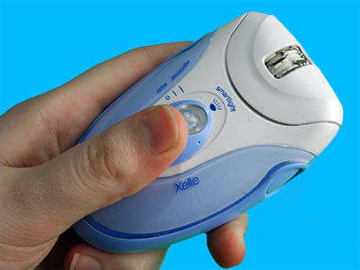

Depilatory creams
Depilatory creams temporarily remove all hair from part of the body

Plucking
Plucking out hair can be used to temporarily remove hair from part of the body but is often more time consuming than other methods.

Epilation
Epilation temporarily removes all hair from part of the body by physically pulling it out.

Shaving
Shaving can temporarily remove all hair from part of the body, though generally for less time than other methods.
IPL hair removal
IPL is a treatment that causes a long-lasting reduction in body hair in locations it is used.